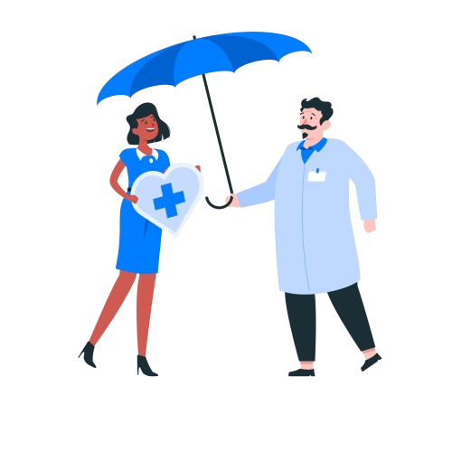
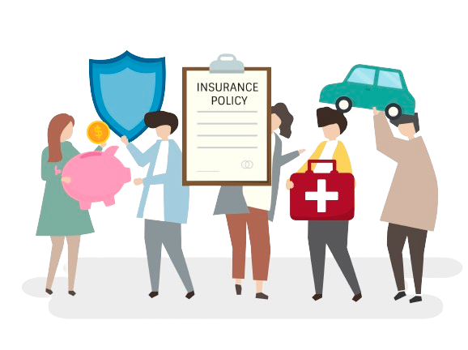

Realizar la presentación del servicio de Seguridad Social teniendo en cuenta lo anteriormente mencionado.
Preguntar al interesado las entidades a las cuales desea afiliarse para EPS Y AFP. con esta información realizar verificación en el Fosyga y Ruaf. (Se recomienda que la persona siga afiliada a la EPS con la que ya estaba cotizando, con el fin de evitar más tramitoloía lo que genera una demora en la afiliación y perjudica tanto al interesado como a la mutual.)
La ARL a la que la mutual esta afiliada es SEGUROS BOLIVAR, por tanto los independientes quedarán afiliados a esta entidad en Riesgos Laborales.
Prestación de tarifas: es importante confirmar si la persona es asociado, usuaio o un asociado potencial, teniendo en cuenta la diferenciación en las tarifas y las formas de pago. Las tarifas son entregadas por el área de Mercadeo al inicio de cada año; pero pueden solicitar a la asistente de seguridad la plantilla de cotización con las tarifas actualizadas.
